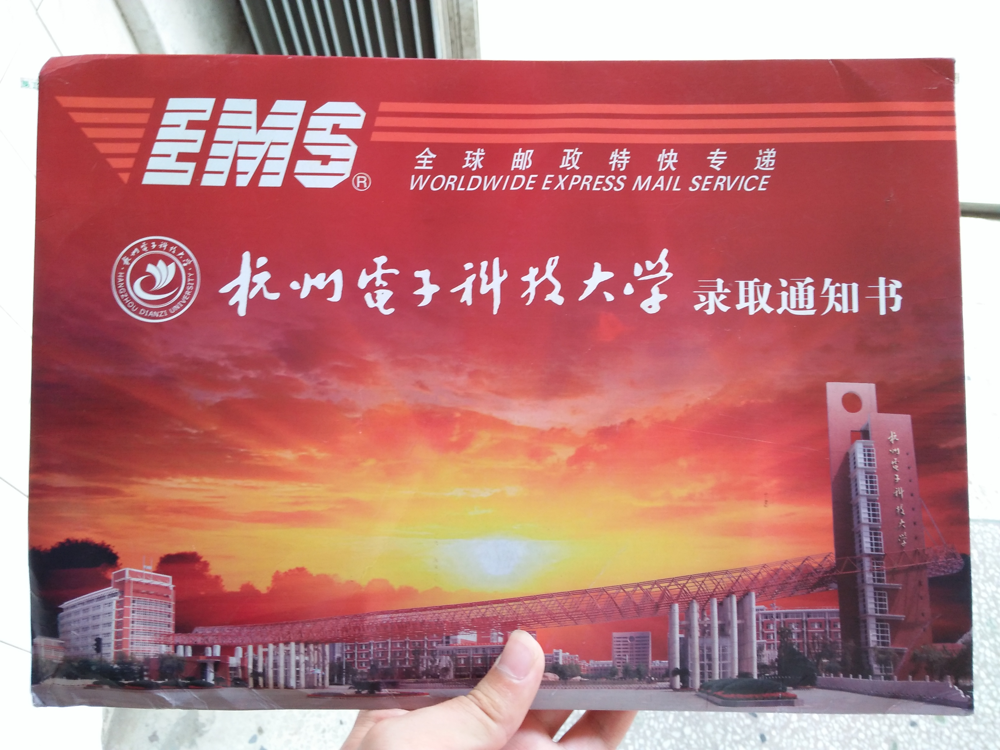
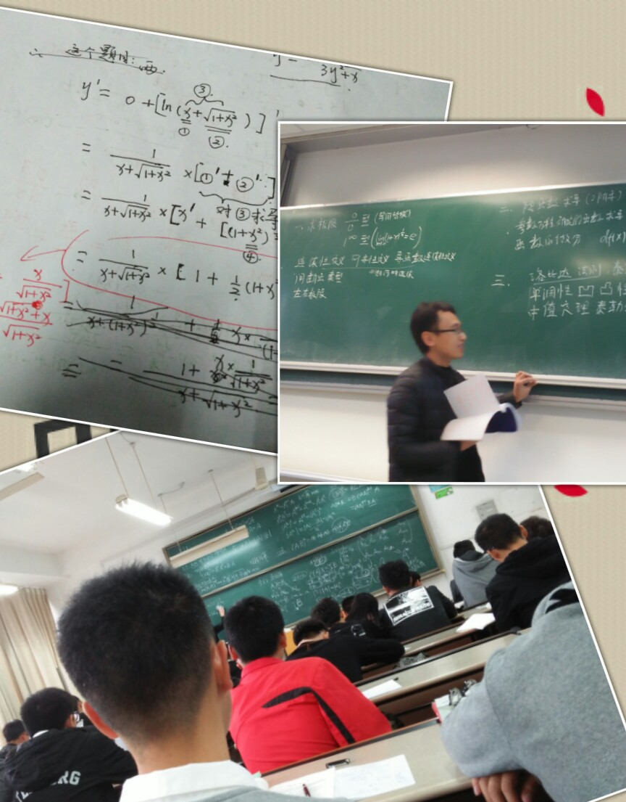
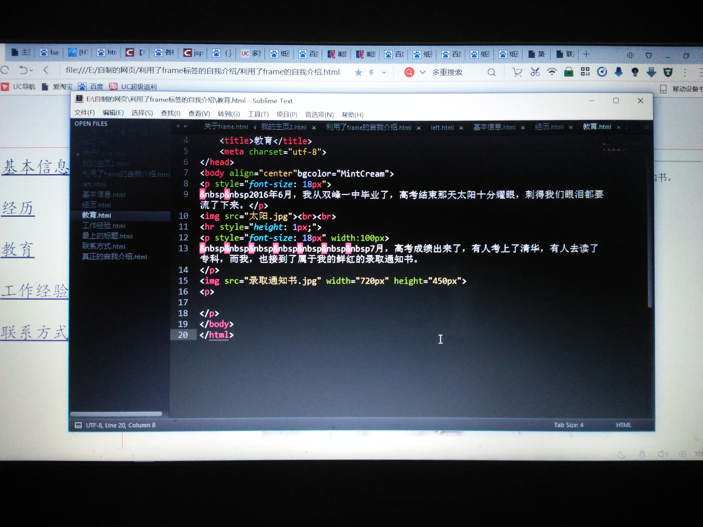

2016年6月，我从双峰一中毕业了，高考结束那天太阳十分耀眼，刺得我们眼泪都要流了下来。
7月，高考成绩出来了，有人考上了清华，有人去读了专科，而我，也接到了属于我的鲜红的录取通知书。

到了大学，才发现自己真的算不上优秀，很多东西感觉跟不上，而且，由于没有人和以前那样管着自己，生活乱了套。慢慢学会了逃课，学会各种娱乐，只是不知为什么，有时会内疚得无地自容。

直到现在我才明白：之所以会内疚，是因为背叛了自己的曾经的信仰，是因为自甘堕落抛弃了自己的梦想。突然想到高中时老师曾经问过我们为什么要考大学，那个时候我的答案是：为了找到一条更好的路去过想要的生活。但是，这半年却背道而驰。还好我现在终于又明白了自己要为了什么而奋斗，我一定要把我的专业课学好，还要把外语学好。
